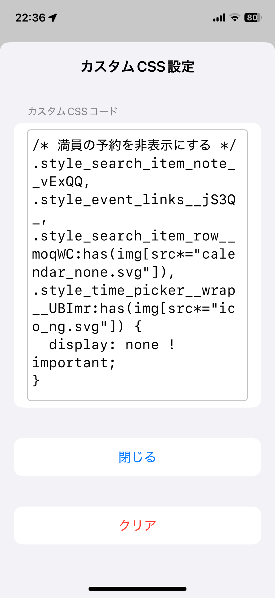

大事なウェブページの更新を自動でキャッチ
URLの追加・削除はタップだけ。選択履歴は自動保存で、次回起動からすぐに利用可能。
指定した間隔でページを自動でリロードし、最新情報を見逃しません。
指定したキーワードの出現・消失を検知して自動でリロードを停止。予約サイトの空きや在庫復活を即座にお知らせ。
スナップショット表示と遅延スクロールでチラつきを大幅に軽減し、スムーズな監視を提供。
最新情報の取得にボタン操作が必要な場合でも、設定した順番にボタン操作を自動で繰り返します。
ユーザーが指定したCSSを適用し、ページの見た目をカスタマイズできます。
設定画面で監視したいURL、キーワード、再読み込み間隔を選択し、「ページを開く」をタップするだけ。
基本的にはインターネット上で公開されているすべてのWebページが対象です。ただし、ログインが必要なページや動的に内容が変わるページでは、監視に制限がある場合があります。 大阪・関西万博（EXPO 2025）Webページの監視も可能ですが、ログイン手順に制約がありますので本ページに掲載している操作手順の動画をご確認ください。
マイチケットページ（監視URLに設定）
https://ticket.expo2025.or.jp/myticket/
万博IDページ（本人確認方法の変更）
https://usrmng.accounts.expo2025.or.jp/idmng/users/screen/menuScreen
指定したキーワードがページ内に出現または消失した場合に、自動的にリロードを停止し、音とバイブレーションでお知らせします。予約サイトや販売サイトなどでの活用に便利です。 例えば、大阪・関西万博（EXPO 2025）のパビリオン予約ページでは「予約可能な時間帯がありません」のメッセージが消えた場合に自動リロードを停止するように設定すれば、予約の空きを検知する事ができます。
基本機能は無料で利用できますが、プレミアム機能は買い切り型（継続して利用料は発生しません）のサービスになります。
Webページの表示をカスタマイズするために、ユーザーが独自のCSSを指定できます。これにより、ページの見た目を変更したり、特定の要素を非表示にすることが可能です。 例えば、大阪・関西万博（EXPO 2025）のパビリオン予約ページでは以下の設定を行うことで、満員の予約及び満員の時間帯を表示させないようにする事ができます。
/* 満員の予約を非表示にする */
.style_search_item_note__vExQQ,
.style_event_links__jS3Q_,
.style_search_item_row__moqWC:has(img[src*="calendar_none.svg"]),
.style_time_picker__wrap__UBImr:has(img[src*="ico_ng.svg"]) {
display: none !important;
}
